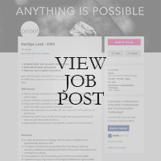

Personal Information
I am a Canadian citizen who is currently immigrating to Australia to live with my wife close to her parents. My father is Mennonite; his family can be traced all over Europe and my mother is ethnically Chinese, but she moved from Hong Kong to Canada when she was a child.
Born and raised in Vancouver, my wife and I relocated to the Central Coast almost three years ago. I speak English and French (a little rusty) and this degree will be my first post-secondary education if you don’t include certificates. I do hold a current Cisco CCENT certificate and I plan of taking my ICND2 this coming March
A little-known fact about me is that in my twenties I purchased and modified a deep crawler and ran a news search engine website that collected and categorized articles from just under two thousand newspapers from around the world. I love to draw, take photographs and tinker with my Raspberry Pi’s and HP DL380 G7 server running vCenter.
Interest in IT
While I’m not sure when my interest in IT started, I started taking computers apart when I was 12 years old after blowing up my parent’s monitor trying get around Chuck Yeager’s Flight Simulator anti-piracy system (Each time the game kicked me out, it would degauss the monitor). My Father took me down to a used computer store to replace the monitor and that’s when I started upgrading computers. Over the next eight years I would build tens of computers for friends and family and format my poor parent’s computer countless times eventually leading to my first job in IT in 2001. I’ve worked as a computer tech for over fifteen years.
Why I chose RMIT
A few years into my IT job I started listening to Podcasts whenever I was working nights. My favorite Podcasts were open university courses and I love their mission so when I decided to go back to school my first thought was to look for an open university.
Educational Expectations
About two years ago when I started my tech business, I was aiming to support small businesses on the Central Coast, but I find myself supporting individuals instead which means for every hour I spend working, I spend an hour driving. Since I’m not a fan of traffic, I’ve been keen to move into other fields of IT, specifically DevOps or back end web or app development. Through this degree I’m hoping to get some direction through understanding of what it’s like to work with different types of code and areas of IT and I hope having the degree will help me obtain a position in that field.
Ideal Job: DevOps Lead - AWS
https://www.seek.com.au/job/39244686?searchrequesttoken=e34579d4-8f4f-40d6-8ef2-91f07edd18e8&type=standout
Design, Build, Manage and Maintain applications on premise and in the cloud using DevOps to collect, monitor and analyze data in order to help the client get ahead of issues and provide quick response turnaround and fixes. It’s extremely rewarding to work on a project that you can go on to support and maintain into the future while at the same time can rollover what you’ve learnt and apply it to the next project.
To get a position like this you’d need years of management, AWS certifications, some previous work with CICD methodology; maybe some work with Jenkins Pipeline. A solid understanding with infrastructure on Layer 2 and Layer 3 would probably be required. My understanding is that most DevOps positions are filled with people who come from a background in coding. Good work ethic and a willingness to put in the hours.
My fifteen years as a computer tech working on desktops and servers would come in handy as would my Cisco certificate on routing and switching. Beyond that I have also done some work with JavaScript, HTML, CSS, PHP, MySQL and run ISPConfig on a Debian Linux ESXi 6 virtual machine.
There is a lot of experience and study that stands between where I am today and this dream job. Though I’ve been a team lead on many projects, the scope has been smaller, and the timelines have been much shorter so I would need to take a course or get some practical experience in management. Security is always at the top of my mind and with any new technology comes a new world of security. This job is close to a full stack developer and I would need to be aware of best practices and have practical experience on every level. While I have investigated AWS, I would need to get a certificate or two in order to feel comfortable. And finally, I would need to build a program or app from the ground up probably in Python.
Psych Tests
These results reinforce my need to stay ahead in my work, stay on task and make sure that to finish what I start within deadlines. I should also be a little tidier and force myself to be a little more outgoing. Looking at this data makes me want work on being a better teammate especially in how quickly I respond to others and be mindful that I must juggle not only the work but coordinate with the team’s work. During the team formation process it would be wise for me to look for someone who’s good at the monitoring the peripherals and milestones.